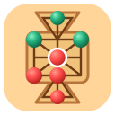
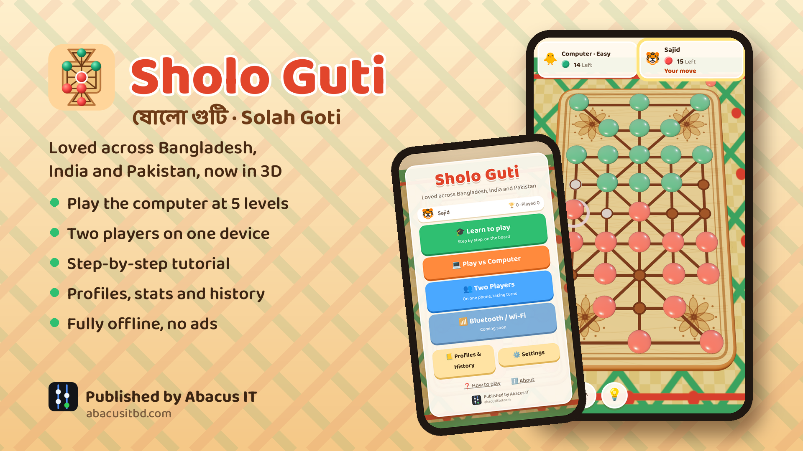
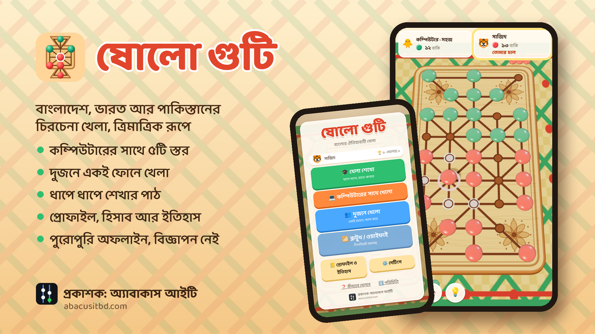
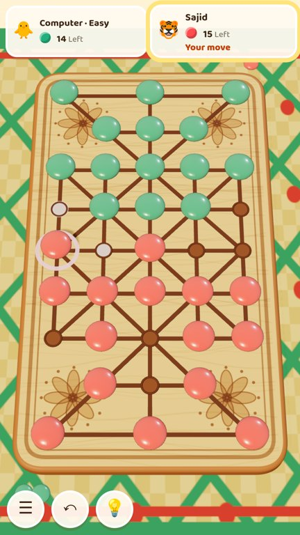
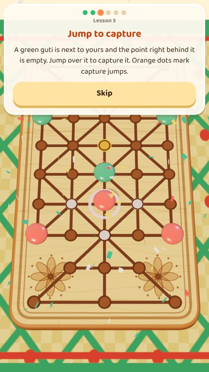
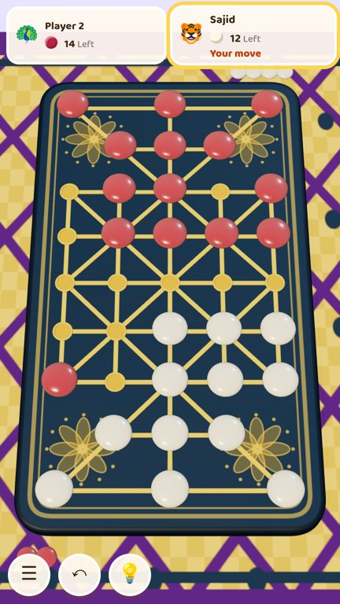
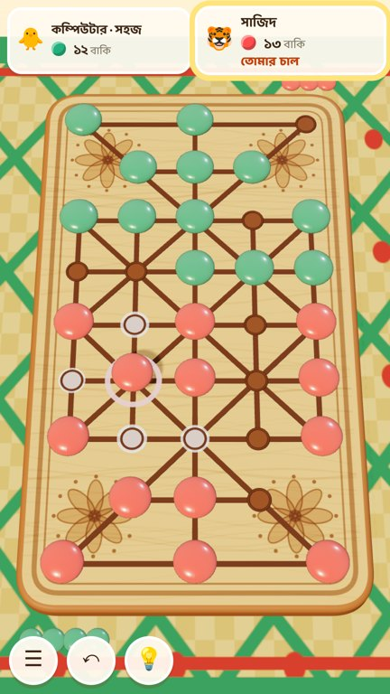
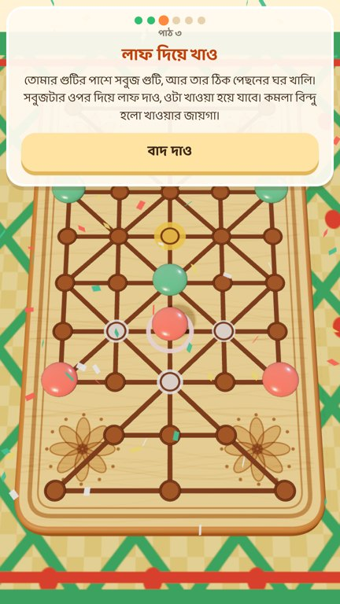
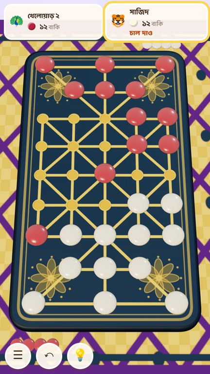

ষোলো গুটি · Solah Goti · loved across Bangladesh, India and Pakistanবাংলার চিরচেনা খেলা, রঙিন ত্রিমাত্রিক রূপে








Sholo Guti ("sixteen pieces", also called 16 Guti, Solah Goti or Sixteen Soldiers) is the much-loved board game of Bangladesh, India and Pakistan, played for generations on courtyards, verandas and carved wooden boards.
Each side has 16 gutis. Take turns moving one guti along a line to the next empty point. Jump over an enemy guti next to yours, to the empty point behind it, to capture it, and keep jumping if you can. Capture all enemy gutis, or leave them with no move, to win.
ষোলো গুটি বাংলাদেশ, ভারত আর পাকিস্তানের গ্রামগঞ্জের চিরচেনা খেলা। উঠোনে, দাওয়ায়, মাটিতে দাগ কেটে কিংবা কাঠের বোর্ডে প্রজন্মের পর প্রজন্ম ধরে এই খেলা চলে আসছে।
দুজনের ১৬টি করে গুটি। পালা করে একটি গুটি দাগ ধরে পাশের খালি ঘরে সরাও। পাশে প্রতিপক্ষের গুটি আর তার ঠিক পেছনের ঘর খালি থাকলে লাফ দিয়ে ওটা খেয়ে ফেলো, আবার খাওয়া গেলে আবার লাফ দাও। প্রতিপক্ষের সব গুটি খেয়ে ফেললে, বা সে আর চাল দিতে না পারলে, তুমি জিতবে।